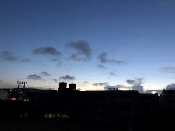
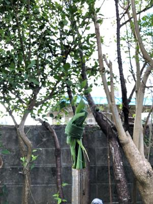

うるがいの話 ある日
最新: 神頼み
うるがいとは 前提知識です
カニの画像をクリックすると『うるがいの話』サイトを表示します
うるがい(ｳﾙｶﾞｲ urugai)とは、『もずくがに』の名前でとても大きくなります。
たながー（ﾀﾅｶﾞｰtanagaa）とは手長えびのことで、何種類かあり大きいのは車 エビぐらいになります。
ぶながー(bunagaa)とは、赤い髪の毛、赤い身体、そして身長は１ｍ２０ｃｍ ぐらい、川の蟹を食べているの目撃された。場所は沖縄県国頭郡大宜味村のと ある村僕の隣近所に住んでいる爺さんから、聞いた話です。
2021年09月16日 (木）
神頼み
17:03


下半期の屋敷うがんをする。テクストに従って夕方４時から４０分程かけて行
う。祝詞で屋敷の神様にお願いごとをする。次回は年末（旧暦かな）だと思う
がその時は、世の中は良くなっていると思う！。
この家屋敷をお守りくださいましてありがとうございます。
どうぞ、これからも、
この家屋敷に魔物、病魔、他人の災いが来ませんようにお守りくださり、
この家屋敷に何の
災い、異変がありませんように。
天神からたくさんの徳がありますよう
今年一年下半期神々の光でこの家屋敷を
お守りください。
言葉の不足や失礼は
未熟者ですのでお見逃しください。
サリ、アートートー、ウートートー